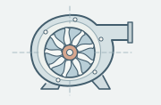
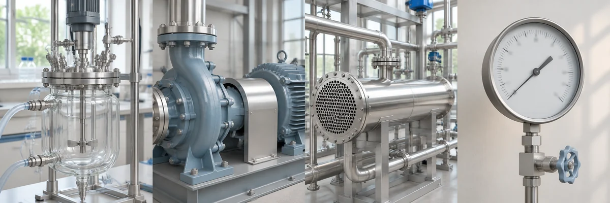
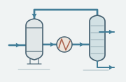
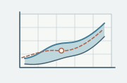
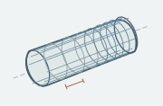

Which equipment limits scale-up first?
We look for the point at which compressor capacity or cooling water limits throughput.
What equipment does a technology need to work beyond the lab? At P2E, we model processes and equipment together to find design requirements and operating limits as production scales up.
Established at KRICT on 15 August 2025


We look for the point at which compressor capacity or cooling water limits throughput.

We trace the heat and material leaving the reactor through the rest of the plant.

We study the range over which the plant can keep running as load falls or rises.

We test whether a more detailed equipment model changes the design choice.
Research topics as of August 2026
We use demonstration design data to compare recycle configurations and equipment sizes, and study their effects on performance and production cost.
We identify which reactor-model results affect plant performance and operating limits.
We study how compressor and recycle constraints affect the feasible operating range as feed or load changes.
Even with the same catalyst, plant output depends on how much flow a compressor can deliver and how much heat can be recovered. That is where our work on system integration begins.
We start with reaction rates, conversion, selectivity and separation performance.
We bring equipment performance and utility limits into the plant’s material and energy balances.
The results help narrow the equipment sizes and operating ranges to test.
The first piece of equipment that needs to change as output rises
Equipment type, capacity and design margin
Minimum load and allowable rates of load change
Performance curves and demonstration data needed before choosing a design
We work with collaborators on plant design using reaction experiments, equipment curves and operating data. Optimization, cost and environmental impact help us compare alternatives.